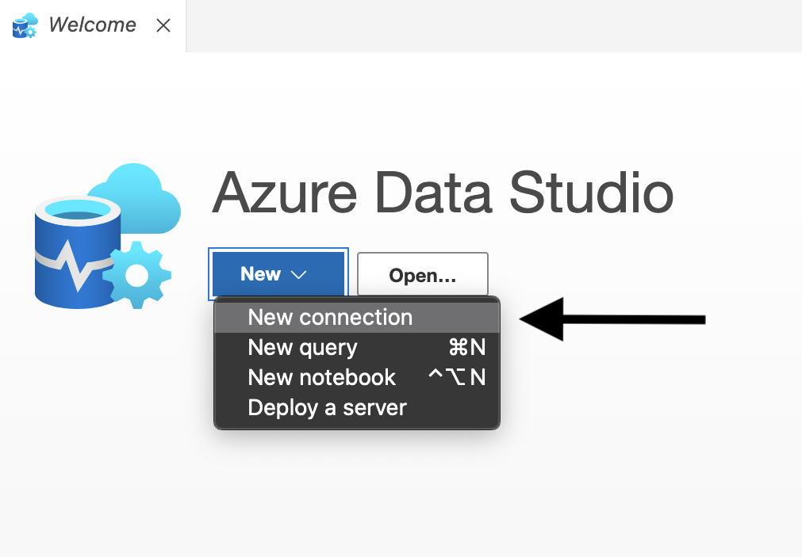
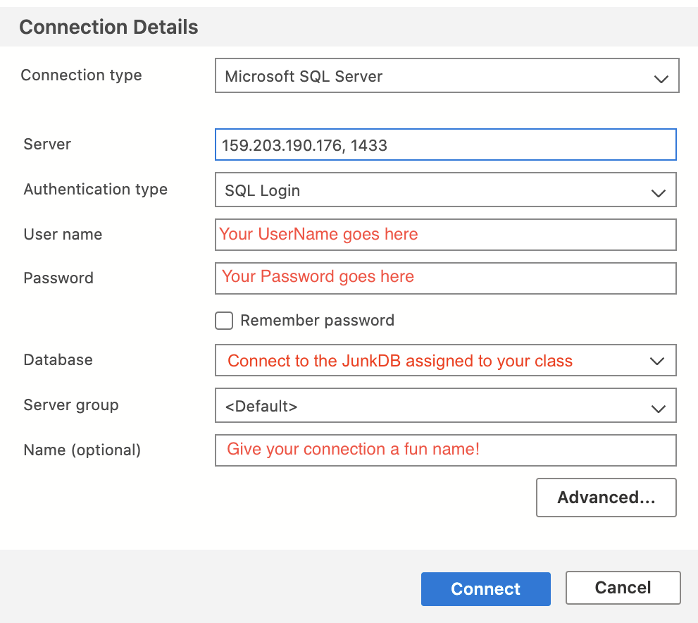

23.2. Exercises: SQL Part 5 - Schemas and CRUD Operations¶
23.2.1. Getting Started¶
Fork this GitHub repository and clone to your computer.
If you need a refresher on how to do this see Instruction for Using GitHub w/Jupyter Notebooks.
23.2.2. Setup a New Connection¶
For this lesson, you will be using a separate username and password than the one you have been using for the class so far. This new account is unique to you and has the permissions necessary to practice the types of queries covered in the reading.
To set up a new connection, do the following:
Open Azure Data Studio
Select New and then New Connection
Use the username and password assigned to you.
The database you will connect to is the
JunkDBassigned to your class.
With your new connection configured, click on the junk database in the Object Explorer. Instead of clicking on Tables, click on the folder called Security and then Schemas. You should see a schema with your name on it. When practicing these queries, you will only be able to use your schema.
The example below is from the AdventureWorks2019 Database.
23.2.3. Submitting Your Work¶
When finished make sure to push your changes up to GitHub.
Copy the link to your GitHub repository and paste it into the submission box in Canvas for Exercises: SQL Part 5 and click Submit.